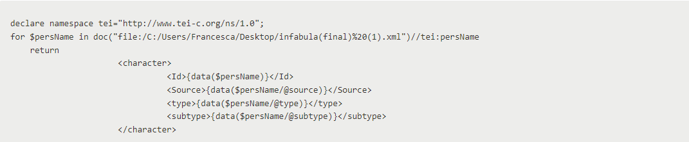
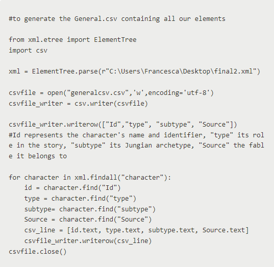
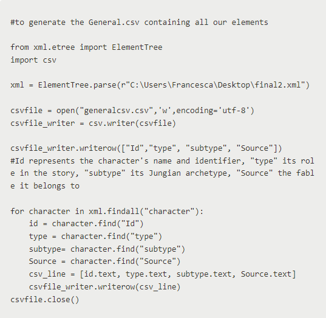
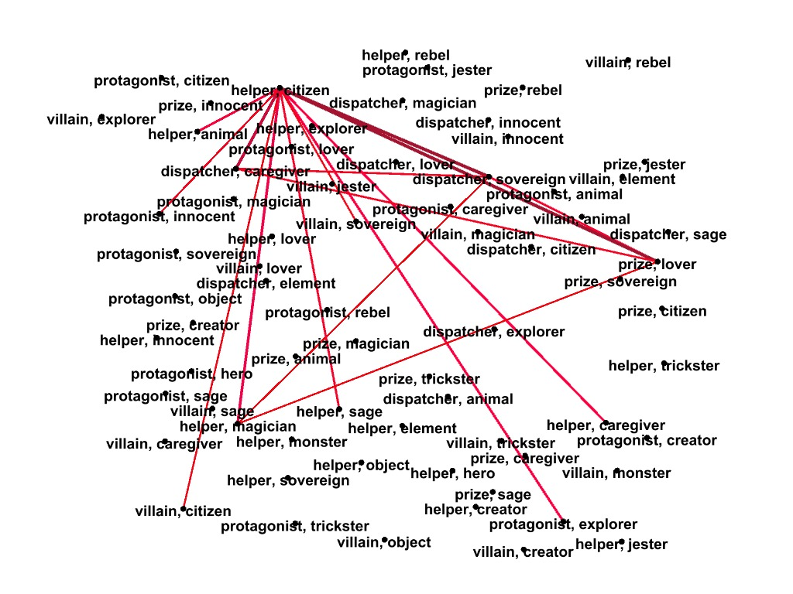

Documentation of the Project
1. Our idea
InFabula’s origins are directly rooted in Fiabe Italiane di Italo Calvino, an anthology of tradition Italian fables written and translated in a simpler form by Italo Calvino in 1956. This collection aims to regroup centuries of oral and written stories into an organized and contemporary structure, dividing them by region and enriching them with critical notes and annotation of linguistic and cultural content.
Calvino rewrote the fables basing its work on their original source, such as the Le piacevoli notti by Francesco Straparola (Venice, 1550) and Lo Cunto de li Cunti by Giambattista Basile (Naples, 1636); other fables have been provided to Calvino trough the transcription of regional oral stories, then redacted by the author in a national language accessible to everyone.
To this day, Calvino’s work is unmatched: Fiabe Italiane represents the only Italian literary instance containing examples of folklore coming from the entire peninsula. The effect created by this co-existence is unique: while reading, it’s possible to identify patterns between regional traditions and stories of European matrix, but it’s also possible to follow a sort of trace among the Italian fables themselves.
Our team wanted to design a model capable of navigating trough this enormous variety of characters, situations, rites and patterns. It’s not a ground-breaking concept, since it’s possible to find similar projects online: what distinguishes InFabula from other examples, in our opinion, is how we decided to explore this sea of possibilities.
Roles and archetypes play a key point in our project, since they’re our compass, so to say: every character in Fiabe Italiane has been coded to be distinguishable by their name, the role they play in the story, and by their archetype, and because of this, each one of them is connected to other individuals sharing their same attributes.
To better explain, every Princess with the role “protagonist” and the archetype “lover” is linked to another one of the same type, and every “helper” interacting with them is therefore compared according to their nature and actions: for example, we could ask ourselves, who is the perfect helper (and with this we mean, the most common) in an Italian fable? And what does this say about our culture and our remotest mindset? We’ll delve into this in the dedicated section, exploring both the technical and the practical segments of our project, but for now let’s keep this in mind: this is a digital edition and an example for network analyses of literary characters (in this case, interpreted by their role and archetype), which has the aim to represent a wider point of view, a regional and national one, if not, on the long run, a European one.
2. Workflow
Roles and Archetypes in “InFabula”
Our characters’ classification is based on two main sources. The first one is related to the traditional roles in fables, as analysed and explained by Vladimir Propp in his essay Morphology of Fables: Propp indicates a set of recurrent characters’ types in all the legends, myths, and fables of modern cultures; he divided them into categories that all of us are familiar with, such as:
-The Villain, the main opposing force
-The Protagonist, the main acting force
-The Dispatcher, the quests giver
-The Helper, who can also be called a “donor”, a figure that through magic or common sense guides the protagonist
-The Prize, is the ultimate aim for our protagonist (in our analysis, usually a loved one, a princess or a prince)
-The Trickster
The last one, the role “Trickster”, has been added by us: it is traditionally related to our second source, but we thought that it could perfectly embody a character that moves the plot by scheming and deceiving those around them without really sticking out as a villain or a helper.
Propp also delves into specifying two additional types of characters, an ulterior definition of the “fake hero” (the antagonist posing himself after the protagonist, aiming to steal his success or to marry the princess) and the sso-called “Her father” (who follows the same actions of the dispatcher, while also being the father of the prized love interest).
We decided to just focus on the one listed above this paragraph since we specified the inner nature of the characters with the additional attribute “subtype”, the archetype.
The source for our archetypes comes, instead, from psychology: Carl Jung defined them as “universal and primal symbols” of our “collective unconscious”, a concept extremely close to the one exemplified by Propp’s work. Jung’s analysis goes well beyond our classification: he describes 12 different types, yes, but he also focuses on sexuality, gender identity, and the subconscious, something that could have been more than interesting to incorporate into our analysis, but not immediately essential.
Therefore, we selected and re-elaborated some of his archetypes, while keeping their core intact. They represent the character’s personality and attitude throughout the narration, as interpreted by us:
- The Hero, a courageous and righteous character, sometimes too impulsive for their good
- The Caregiver, a caring and protective figure, could turn into a cruel and controlling villain
- The Sovereign, an authority figure, is usually capable of changing the plot with a single action
- The Creator, is a character that uses their wits and creativity to achieve success or plan someone else’s demise
- The Innocent, a naif character, moved by curiosity, inexperience, or just silliness
- The Sage, wise and intelligent, someone that puts knowledge above anything else
- The Rebel, a complex figure, who aims to destroy order for personal reasons or to achieve their goals without following the rules
- The Jester, similar to the Creator, but characterized by the ultimate desire of just having fun or getting what they want while doing the bare minimum
- The Lover, describing a character moved by their emotions: the Lover will try to follow their dreams in any way possible, even if they’re motivated by jealousy, love, desire, or malice
- The Magician, similar to the Sage, but characterized by a mysterious and eccentric aura
In the tag “subtype”, we also specified the nature of certain characters, such as “monster” (used for any humanoid creature with strange and horrific traits, such as orcs, giants, and so on), “object” (applied to talking or magical instruments and items), “animal” (used for talking or magical beasts, and also for human characters turned into animals) and “element” (a generic subtype that we applied to humanized weather conditions or landscape’s location of interest, like winds, rivers, and so on).
2.1 Digital Edition
We approached a digitised version of Fiabe Italiane, in a classic .txt format , and the first step was transferring the fables’ content in an XML format.
We decided to use Oxygen to work on our file, now called Infabula.xml , and then we proceeded with adding the tags and the attributes to our data: coding was completed alongside a complete reading of Calvino’s work, which necessary to integrate the correct attributes and therefore the correct values to assign to every character.
The document starts with the declaration of the namespaces and with the TEI declaration, followed by all the mandatory tags, and then with the content segment of Infabula.xml: the text tag, containing the body and dividing itself in div , the containing node for all our data.
Every div has an attribute called XML:id , which we used to differentiate, at least from an id point of view, every fable from one another. The outline of our project, therefore, looks like this:
Inside every div, the structure is instead the following:
With the tag head , we identified the title of the fable, while with span and placeName we added the region or location of the provenance of it, to allow a spatial analysis later on. In the tag p , we find the element persName (referring to any character appearing in the narration) with its respective attributes: type contains the value representing the role we assigned to the character in question, subtype stands for its Jungian archetype or its most important characteristic (as explained before), while source creates a reference to the fable which the character belongs to, expressed in the div with the attribute xml: id.
note , that we inserted for any critical commentary provided by Italo Calvino and for eventual linguistic analysis, emph , a stylistic and textual tag specifying the particular nature of a segment of text (a song, for example) and addName , related to the characters and expressing an alternative name for a specific individual.Organizing data: creating the CSV
After finishing the first tagging process, we had to retrieve the characters’ roles and archetypes: this is the first step to obtaining sufficient material for an efficient network analysis. We didn’t yet possess any statistical indicator about our data, therefore it was essential to organize all the information in a readable form.
We chose to create a .csv file and a .json file to store our characters’ data. If obtaining a JSON file was easy (Oxygen provides a tool to do so with a click), we had to use Python and the Pandas library to generate a CSV table from our XML document.
Here we realized that our data was not correctly formatted for such a task: the structure shown before didn’t allow us to interpret type, subtypeor sourceas if they were elements and, therefore, children nodes of the persName node; Python interpreted them as content inside of the node persName, and the csv resulted either incomplete or completely wrong (for example, incorrect types and subtypes would be assigned to different characters, so that a character with the type “protagonist” and the subtype “explorer” resulted as a “villain” “magician” in thecsv).
At this point, we went trough these following steps:
- We retrieved the
persNamecontent and attributes by using XQuery, on Oxygen, and then we asked XQuery to return a specific result, as shown here.

It was now time to generate ourCSVtable on Python. While keeping in mind what was necessary for the network analysis, we created threeCSVfiles (a general one, containing all theXMLelements; a nodes one, containing the elements to turn into nodes; an edges one, containing the future edges).
We requested the character’s name to use as an id, a necessary element to better identify our character in the csv table.
What we obtained was something along these lines:
 


In the Edges.csv we needed to identify the type of each character (Source) and the type of the character(s) they interacted with (Target): we did this by taking into consideration the fables that each character belonged to, and we grouped them accordingly; if this prerequisite was satisfied, they were then connected as a Source and its Target.
For this passage, we decided to unite the element type and subtype under one single tag (type), since otherwise, the code would have lacked efficiency: we could say that this happened as an afterthought, but it’s an easy solution applied for an essential technical segment of our project.
The network analysis: mapping folklore
We obtained a general network graph by importing our CSV tables on Gephi, an open-source visualization and exploration software. We opted for an undirected graph, that would sum all the common edges shared by the nodes’ network, and we discovered what we point out in the network analysis dedicated page.
2.2 Spatial Analysis
In order to realize the spatial analysis we used the tool Leaflet, it is an open-source JavaScript library for mobile-frienly interactive map.
After setting up the map centered in order to show the whole of italy , we pinpointed with the designated markers. the cities linked to the fables selected by Calvino. thanks to leaflet technologies we inserted popups in each marker, and by clicking on it the list of all the fables of that certain place appear.
Thank to this kind of visualization we are able to immediately envision the spatial distribution of Clavino's Fables in different regions. By looking at the map we get the sense that there is a stronger presence of fables in the area between Emilia Romagna and Toscana and in sicilia.
2.3 Network Analysis
We obtained a general network graph by importing our CSV tables on Gephi, an open-source visualization and exploration software. We opted for an undirected graph, that would sum all the common edges shared by the nodes’ network, and we discovered what we point out in the network analysis dedicated page.
To summarise our results, we can say that the graph containing the entirety of our data shows a specific pattern: an average Italian fable has a prevalence of realistic elements, such as demanding kings, helpful or avid citizens, and damsels in distress, respectively in the roles of the dispatcher or the villain, the helper or the villain and the prize. The protagonist is usually an explorer, an individual deeply fascinated with discovering the world and making a name for themselves, or an innocent, a unaware, and curious presence who stumbles into the story and in their main character’s role.
Even if this graph technically contains all the elements recurring in an average Italian fable (interestingly so, Italo Calvino proposes the first story of the anthology, “Giovannin Senza Paura”, as the representative fable for Italian folklore, and according to our model, it fits perfectly this definition) we asked ourselves if there were deeper differences according to the area the fables had been collected from.
To answer this question, we generated three new CSV tables, one for Northern Italy, one for Central Italy, and one for Southern Italy and the Isles. We did this by implementing the code already mentioned before, and by checking the region each fable comes from while dividing them into new XML documents (north.xml, center.xml, and south.xml); we then imported these new spreadsheets on Gephi.
We can affirm that there are some substantial differences, that could be explained broadly by the different cultures that influenced Italy in the course of history: if in the north, for example, the villain is either a sovereign or a magician, in the center they’re usually a lover and, in the south, a simple citizen; southern fables also differ from the others, because one of their most common protagonist is a trickster (a sly main character, used to deceiving and outsmart those stronger than them).
To visualize our graph we used the free, open-source web application Retina, this tool allows you to embed your graph into a website. Users can filter nodes on their attributes. Retina tries to detect whether attributes represent quantitative, qualitative or textual information. Graph editors can select which fields can be used to filter or not for graph explorers, it also allows mapping node colors on node attributes (in a way inspired by Gephi), so that it can display a proper caption.
3. Results and Final Remarks
InFabula demonstrates that it’s possible to map old folklore and myths to find new, meaningful connections: our model could be applied to any corpora of fables and stories, no matter the culture, and it could also be enriched, by analyzing, for example, the patterns among events, characters’ appearances or anthropological elements.
Most importantly, we managed to showcase what is the structure of an ancient Italian story, and we digitally proved Italo Calvino’s critical observations.
4. Bibliography
- - Daquino, M., Giovannetti, F., & Tomasi, F. (2019). Linked Data per le edizioni scientifiche digitali. Il workflow di pubblicazione dell’edizione semantica del quaderno di appunti di Paolo Bufalini. Umanistica Digitale, 3(7).
- - Matthew James Driscoll, Elena Pierazzo. (2016). Digital Scholarly Editing Theories and Practices
- - El Khatib, R., & Schaeben, M. (2020). Why Map Literature? Geospatial Prototyping for Literary Studies and Digital Humanities. Digital Studies/le Champ Numérique, 10(1)
- - Tei Documentation
- - Moretti, F. (2005). Graphs, Maps, Trees: Abstract Models For A Literary History: Abstract Models for Literary History